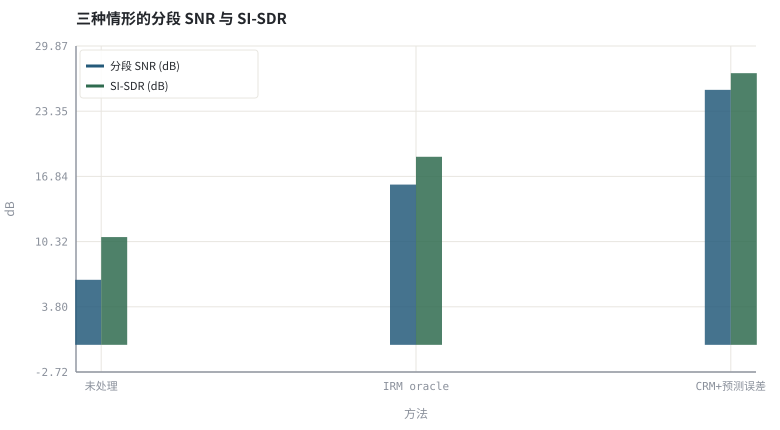
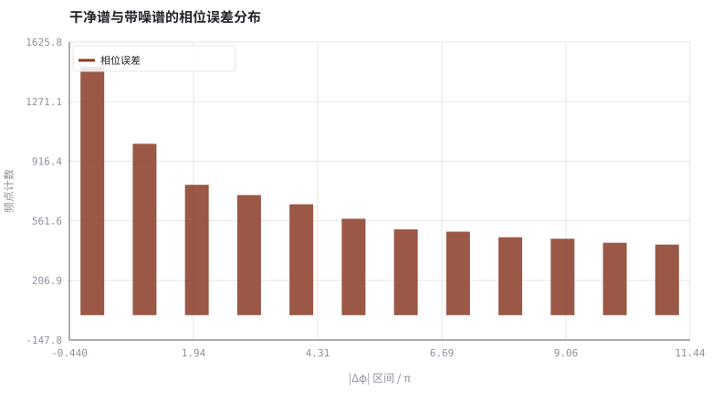

第 22 章复数域与相位：DCCRN、深度滤波与时域模型
只改幅度不改相位，是一条容易走到头的路；本章说明为什么以及下一步怎么走。
本章位置：第 21 章 · 网络骨架：DNN / CRN / U-Net / TCN / Conformer 讨论「读多少上下文」，本章讨论「输出什么域」；第 23 章 · 神经噪声抑制：从 RNNoise 到 DNS Challenge 回到具体任务，第 24 章 · 神经 AEC 与回声/噪声联合抑制 把参考信号也接进网络。
只改幅度相当于给复数只缩放不旋转；复数掩码允许同时旋转，因此能补回 φ_s − φ_y 这一半信息。
- 能说明幅度掩码在相位上的固有误差上界。
- 能推导复数比值掩码 CRM 并解释它为何能同时修正幅度与相位。
- 能对比谱域复数网络与时域编码器—解码器两条路线。
- 能量化相位误差随信噪比的变化。
§知识点地图
每个知识点都配了 1～2 个扩展学习链接；本章完整资源清单见 扩展学习。
| # | 知识点 | 扩展学习 | 状态 |
|---|---|---|---|
| 1 | 相位不变假设 | DeepFilterNet ↗ · Ideal ratio mask / T-F masking ↗ | 正文已覆盖 |
| 2 | 相位误差上界 | DeepFilterNet ↗ · Ideal ratio mask / T-F masking ↗ | 正文已覆盖 |
| 3 | 复数比值掩码 CRM | Ideal ratio mask / T-F masking ↗ · Microsoft DNS Challenge ↗ | 正文已覆盖 |
| 4 | DCCRN 与复数卷积 | The Scientist and Engineer's Guide to DSP ↗ · SciPy signal ↗ | 正文已覆盖 |
| 5 | 深度滤波 DeepFilter | DeepFilterNet ↗ · torchaudio ↗ | 正文已覆盖 |
| 6 | 时域 Conv-TasNet | Asteroid ↗ · torchaudio ↗ | 正文已覆盖 |
| 7 | 复数损失与 SI-SDR | Asteroid ↗ · SpeechBrain ↗ | 正文已覆盖 |
| 8 | 相位与可懂度 | DeepFilterNet ↗ · Ideal ratio mask / T-F masking ↗ | 正文已覆盖 |
§22.1幅度掩码没有碰过的那半个信息
Y = |Y|·e^{jφ_y} ，Ŝ = G·|Y|·e^{jφ_y} → 相位误差 Δφ = φ_s − φ_y 完全保留
第 19 章 · 时频掩码：IBM / IRM / CRM 与监督学习形式化 的 IRM 把相位原样留给了带噪信号。低 SNR 时 φ_y 与 φ_s 可能相差很大，此时无论幅度估得多准，重建波形都会与干净信号错开。这解释了为什么纯幅度掩码在高噪声下会出现「听起来闷、指标却不错」的现象。
| 路线 | 输出 | 能修相位吗 | 代价 |
|---|---|---|---|
| 幅度掩码 | G[t,k] ∈ [0,1] | 不能 | 最省算力，低 SNR 受限 |
| 复数掩码 | M[t,k] ∈ ℂ，Ŝ = M·Y | 能 | 需复数网络或实部/虚部双通道 |
| 复数谱映射 | 直接回归 Ŝ 的实部虚部 | 能 | 输出动态范围大，训练更难 |
| 时域模型 | 一维卷积直接输出波形 | 隐式能 | 无需 STFT，但感受野与算力要求高 |
§22.2CRM、DCCRN 与深度滤波
M = S / Y = (S·Y*) / (|Y|² + ε) → Re(M) = (S_r Y_r + S_i Y_i)/(|Y|²+ε)
复数比值掩码就是一次复数除法：把它乘回 Y 能精确还原 S（oracle 情形）。DCCRN 用复数卷积网络去预测这个 M；DeepFilterNet 在低频用深度复数滤波、高频用传统增益，以极低算力换取相位修正；Conv-TasNet 则干脆绕开 STFT，用时域编码器学习一组可学习的「滤波器组」。
- 相位与可懂度：STOI 等可懂度指标对相位误差不如对幅度敏感，但听感与下游 ASR 仍会受影响。
- 损失：复数 MSE、幅度 + 相位加权、或直接 SI-SDR（第 26 章 · 联合 3A：多任务、级联与端到端建模）。
- 实时性：复数网络参数量约为实数版的两倍，量化前要重算预算（第 29 章 · 量化、剪枝与端侧推理）。
实验里的 CRM 需要干净谱 S，与 IRM 一样是上界；为得到有限可比的数值，代码给它加了与网络预测误差同量级的扰动。真正部署时必须由网络预测 M，性能还会再下降。
§Python 实验
实验 22-1 · 幅度掩码、复数掩码与相位误差分布
#!/usr/bin/env python3
# -*- coding: utf-8 -*-
"""计算 IRM 与 oracle CRM，比较二者的 SI-SDR，并画出干净谱与带噪谱的相位误差直方图。
全部语音 / 噪声 / 房间冲激响应均为代码合成信号，仅用于教学演示机制与量级。
"""
from __future__ import annotations
import math
import pathlib
import random
import statistics
import sys
import time
_here = pathlib.Path(__file__).resolve()
for _p in _here.parents:
if (_p / "tools" / "dsp.py").exists():
sys.path.insert(0, str(_p / "tools"))
break
from dsp import (SAMPLE_RATE, fft, hann, stft, istft, magnitude_db, spectrum,
white_noise, tone, chirp, synthetic_speech, rir, convolve,
fft_convolve, delay, clip, normalize_peak, rms, rolling_rms,
smooth, db, energy_db, snr_db, erle_db, seg_snr_db,
scale_align, si_sdr_db, lufs_approx,
write_wav, read_wav, wav_info)
from chart import Chart, heatmap, BLUE, RED, GREEN, AMBER
FIG = _here.parents[1] / "fig"
AUDIO = _here.parents[1] / "audio"
FIG.mkdir(exist_ok=True)
AUDIO.mkdir(exist_ok=True)
random.seed(7)
# ---- 参数区 ----
N = 8000
N_FFT, HOP = 256, 128
NOISE_AMP = 0.040
MASK_NOISE = 0.06 # 模拟网络预测误差，避免 oracle 精确重建
BINS = 12
# ---- 计算与作图 ----
rng = random.Random(7)
clean = synthetic_speech(rng, N)
noise = white_noise(rng, N, NOISE_AMP)
noisy = [clean[i] + noise[i] for i in range(N)]
fs, fn = stft(clean, N_FFT, HOP), stft(noise, N_FFT, HOP)
hist = [0] * BINS
phase_vals = []
for idx, (ry, iy) in enumerate(stft(noisy, N_FFT, HOP)):
rs, is_ = fs[idx]
rn, in_ = fn[idx]
for k in range(1, N_FFT // 2):
d = (math.atan2(is_[k], rs[k]) - math.atan2(iy[k], ry[k]) + math.pi) % (2 * math.pi) - math.pi
phase_vals.append(abs(d))
b = min(BINS - 1, int(abs(d) / math.pi * BINS))
hist[b] += 1
def masked(kind):
frames = stft(noisy, N_FFT, HOP)
for idx, (ry, iy) in enumerate(frames):
rs, is_ = fs[idx]
rn, in_ = fn[idx]
for k in range(N_FFT):
ms, mn = math.hypot(rs[k], is_[k]), math.hypot(rn[k], in_[k])
if kind == "IRM":
g = ms / (ms + mn + 1e-9)
ry[k] *= g
iy[k] *= g
else:
y2 = ry[k] ** 2 + iy[k] ** 2 + 1e-12
cr = (rs[k] * ry[k] + is_[k] * iy[k]) / y2
ci = (is_[k] * ry[k] - rs[k] * iy[k]) / y2
cr += rng.gauss(0, MASK_NOISE)
ci += rng.gauss(0, MASK_NOISE)
ry[k], iy[k] = cr * ry[k] - ci * iy[k], cr * iy[k] + ci * ry[k]
return istft(frames, N_FFT, HOP, N)
irm, crm = masked("IRM"), masked("CRM")
labels = ("未处理", "IRM oracle", "CRM+预测误差")
signals = (noisy, irm, crm)
snrs = [seg_snr_db(clean, scale_align(s, clean)) for s in signals]
sdrs = [si_sdr_db(s, clean) for s in signals]
c = Chart(FIG / "22-masks.svg", "三种情形的分段 SNR 与 SI-SDR", xlabel="方法", ylabel="dB",
xticks=[(i, m) for i, m in enumerate(labels)])
c.bars(range(3), snrs, BLUE, label="分段 SNR (dB)")
c.bars(range(3), sdrs, GREEN, label="SI-SDR (dB)")
print("掩码图:", c.save())
h = Chart(FIG / "22-phase.svg", "干净谱与带噪谱的相位误差分布", xlabel="|Δφ| 区间 / π", ylabel="频点计数")
h.bars(range(BINS), hist, RED, label="相位误差")
print("相位图:", h.save())
write_wav(AUDIO / "22-noisy.wav", normalize_peak(noisy))
write_wav(AUDIO / "22-irm.wav", normalize_peak(irm))
write_wav(AUDIO / "22-crm.wav", normalize_peak(crm))
for m, a, b in zip(labels, snrs, sdrs):
print("%s: segSNR=%.2f dB SI-SDR=%.2f dB" % (m, a, b))
print("平均 |Δφ|=%.3f rad | IRM→CRM SI-SDR 增益=%.2f dB | SAMPLE_RATE=%d N_FFT=%d" %
(sum(phase_vals) / len(phase_vals), sdrs[2] - sdrs[1], SAMPLE_RATE, N_FFT))操作：对照 IRM 与 CRM 的 SI-SDR；观察相位误差直方图是否集中在零附近。 预期与判读：给 oracle CRM 加上与网络预测误差同量级的扰动后，它仍能同时修正幅度与相位，SI-SDR 高于 IRM。说明幅度掩码留下的那部分误差确实来自相位；若把 MASK_NOISE 设为 0，CRM 会精确重建干净谱，SI-SDR 趋于无穷——那只是 oracle 上界。
改参数看趋势：把 NOISE_AMP 提到 0.12，相位误差分布右移，IRM 与 CRM 的差距进一步拉大。 文件位置：part4/22-complex-phase/code/22-complex-phase.py


22-noisy.wav
带噪输入（16 kHz / 16-bit 单声道，代码合成信号，不是真实录音）
22-irm.wav
IRM：只改幅度（16 kHz / 16-bit 单声道，代码合成信号，不是真实录音）
22-crm.wav
带预测误差的 CRM：幅度与相位一起修正（16 kHz / 16-bit 单声道，代码合成信号，不是真实录音）
代码块右上角可一键复制；仓库里的 code/*.py 由 tools/extract_code.py 从这些代码块自动抽取。脚本只用标准库、固定 random.seed(7)，运行后写出 fig/*.svg 与 audio/*.wav；批量运行用 ./tools/run_python.sh。
§可选真机命令片段
以下命令不参与批量运行，需要本机自行安装对应工具。滤镜是否可用取决于本机 ffmpeg 版本与编译选项，请先用 ffmpeg -filters / ffmpeg -version 自查，并以 https://ffmpeg.org/ffmpeg-filters.html 与各自官方文档为准；本书不假定任何特定版本具备某项能力。
查看 DeepFilterNet 的推理入口
git clone --depth 1 https://github.com/Rikorose/DeepFilterNet && ls DeepFilterNet/说明：该工程以低算力复数深度滤波做实时增强；请以其 README 与许可为准，本书实验不依赖 PyTorch。
§本章参考资料
按本章知识点挑选的精读资料；更多检索入口见 扩展学习。
§相关开源工程
下列工程仅作技术参照，版权与许可证归各自维护者所有。本书实验不依赖它们，也与之无从属关系。
§常见误区
- 把 oracle CRM 的分数当成可部署模型成绩。
- 复数掩码只作用于前半频谱，破坏共轭对称性。
- 认为相位对可懂度没影响就不必建模。
- 忽略复数网络带来的参数量与量化误差翻倍。
§习题与思考
- 推导 M = S/Y 的实部与虚部表达式。
- 解释为什么低 SNR 时相位误差分布会变宽。
- 比较复数谱映射与时域模型在延迟上的差别。
§扩展学习
继续检索
- Google Scholar：complex spectral mapping DCCRN Conv-TasNet phase ↗
- arXiv：complex spectral mapping DCCRN Conv-TasNet phase ↗
- GitHub：complex spectral mapping DCCRN Conv-TasNet phase ↗
全书链接总表见 FFmpeg Filters 文档 ↗ 与 附录 A.7；滤镜是否可用请以本机 ffmpeg -filters 为准。